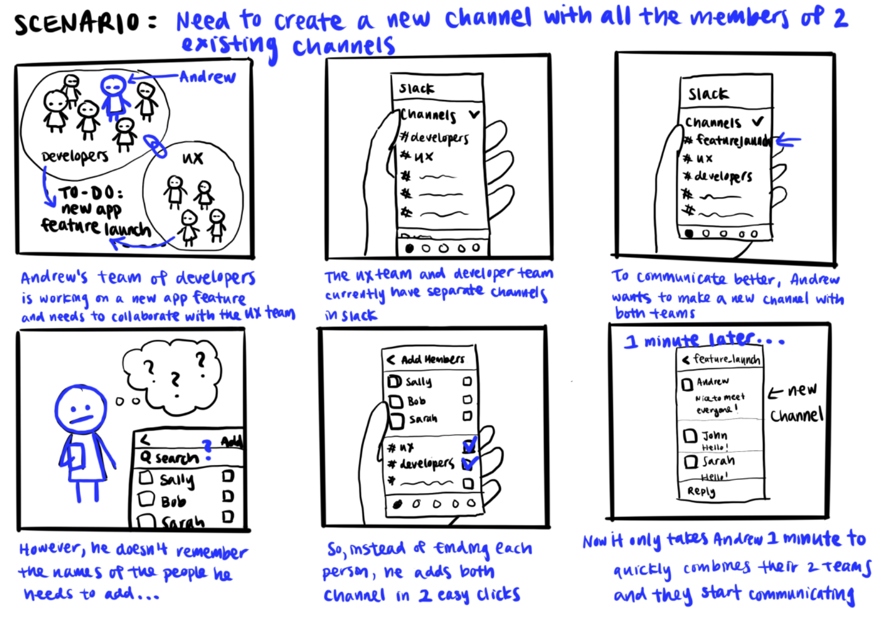
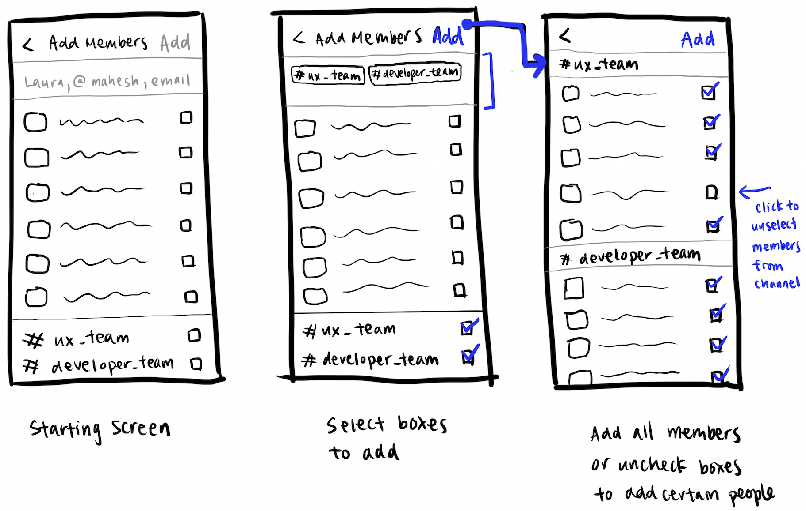
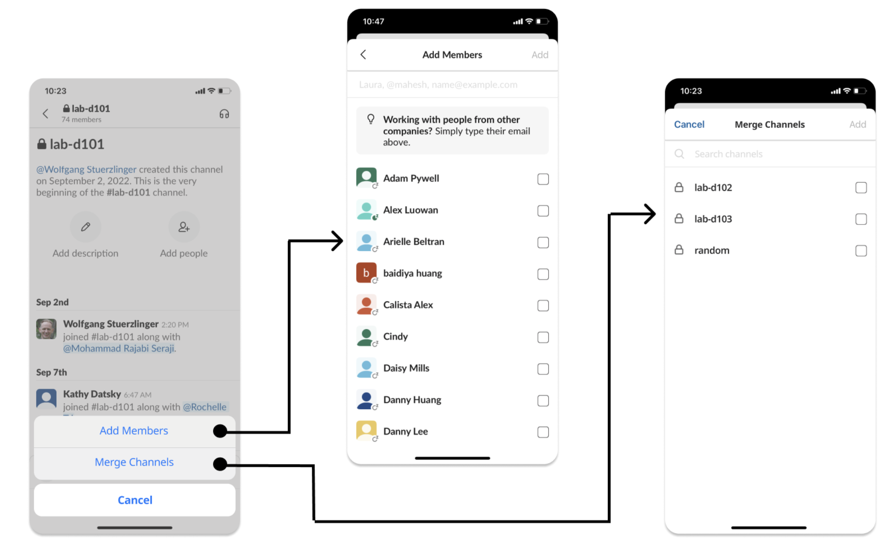
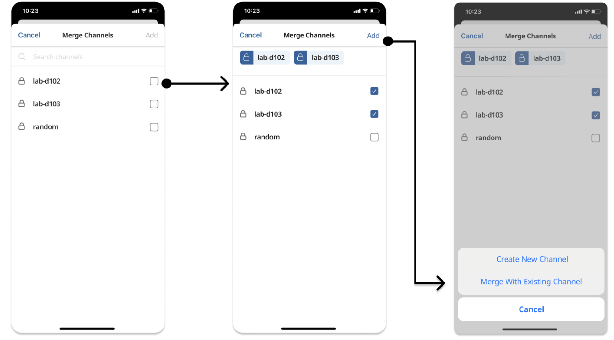
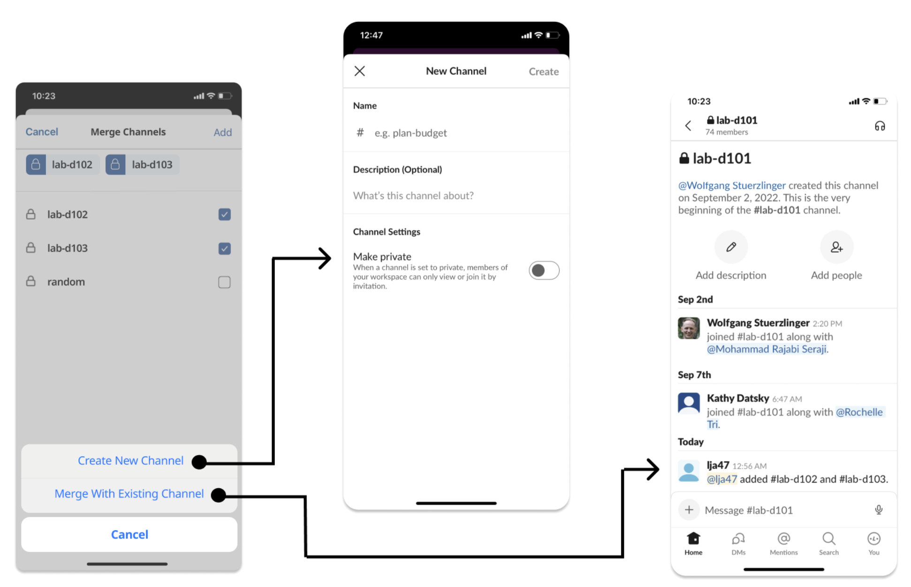

Slack Feature Proposal: Merge Channels

Problem:
Slack is used by many tech industry professionals to collaborate with their coworkers, however the collaborations between multiple teams can be tedious when having to manually add a long list of team members.
Solution:
Creating a merge feature with the ability to merge multiple slack channels in one click.
Project Constraints
Prompt: Redesign or add a feature to an existing mobile application to better address user needs.
Time: 4 weeks
Tools used: Figma
Team: Myself
My Role: UX/UI Design
User Research
After choosing the Slack application, I conducted user research through interviews and personal use of the app to identify design problems.
User Interviews / competitive analysis
The main pain point identified was the tedious nature of merging channels when collaborating with different teams.
Storyboard
I created a storyboard to contextualize how developers and designers can benefit from this channel merging feature.
Task Flow
I created a task flow diagram to help visualize the user experience.

Low Fidelity Wireframes
Next, I sketched low fidelity wireframes to visualize the merge feature.
High Fidelity Wireframes
After receiving feedback, I improved the design and created a high-fidelity mockup in Figma.
  Challenges
I found that the main challenge of this project was finding problems within an existing app and creating changes within the constraints of the application's existing style. It was restrictive to only be able to design the mockups using only the company's existing user interface rules but served as a good learning opportunity for future work within a company.